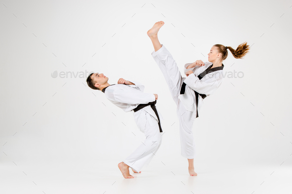
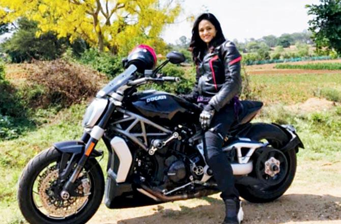

16 years of Karate Training with three different styles.
Attended various tournaments at regional and national levels.
Lead Vocalist in a Band.
Attended auditions as well.

I love Biking.
I wish to be a part of a biking club and explore my beautiful country.
My youtube videos:
My Article on #MeToo:
“She remembered who she was and the game changed”……..
This quote by Lalah Deliah explains exactly what the me too movement is all about. Alyssa Milano used #metoo in her 2017 october 15thtweet expressing the sexual harassment she faced. Little did she know that this will turn out to be a revolutionary movement soon all around the world. From actors to journalists, politicians to businessmen, every profession is being questioned of its purity.
It took years for women to come out of their suppressed fears of getting judged under the social stigma. Tanushree Dutta being one of the initiators of this movement in the Bollywood industry took names that was heart breaking and shocking! Women all around the country are still fighting to come out and speak of what did they face. Well there are a lot of people who are supporting this movement irrespective of their genders, while some without any shame are still judging in terms of publicity stunts, bad feminism and what not!
Right from being a 12 year old little girl standing in her school uniform to a 70 year old granny waiting for her grandchildren to return from school…. Every woman has faced this trauma where men stare, wink, buzz around, tease, abuse, touch, feel !... a girl, a woman then might think, ‘shall I speak up... what will people say!’…
When a country’s top lawyer Mr. Ram Jethmalani can defend Asaram bapu saying the girl who accused him of sexual assault is mentally ill! then there is deifinitely something that the people of the country should really think upon and it is nothing but the basic thinking and perspective of seeing a woman.
If #metoo can give this courage to woman to come out and speak about people and if this is what can help people question their basic conscience, then this is worth it!.
#MeToo